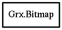

Bitmap
Object Hierarchy:

Description:
public struct Bitmap
A mode independent way to specify a fill pattern of two colors.
It is always 8 pixels wide (1 byte per scan line), its height is user-defined. SET THE TYPE FLAG TO ZERO!!!
Content:
Fields: